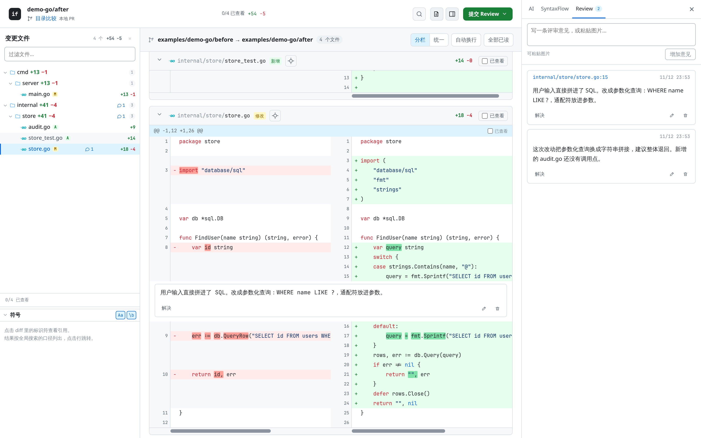
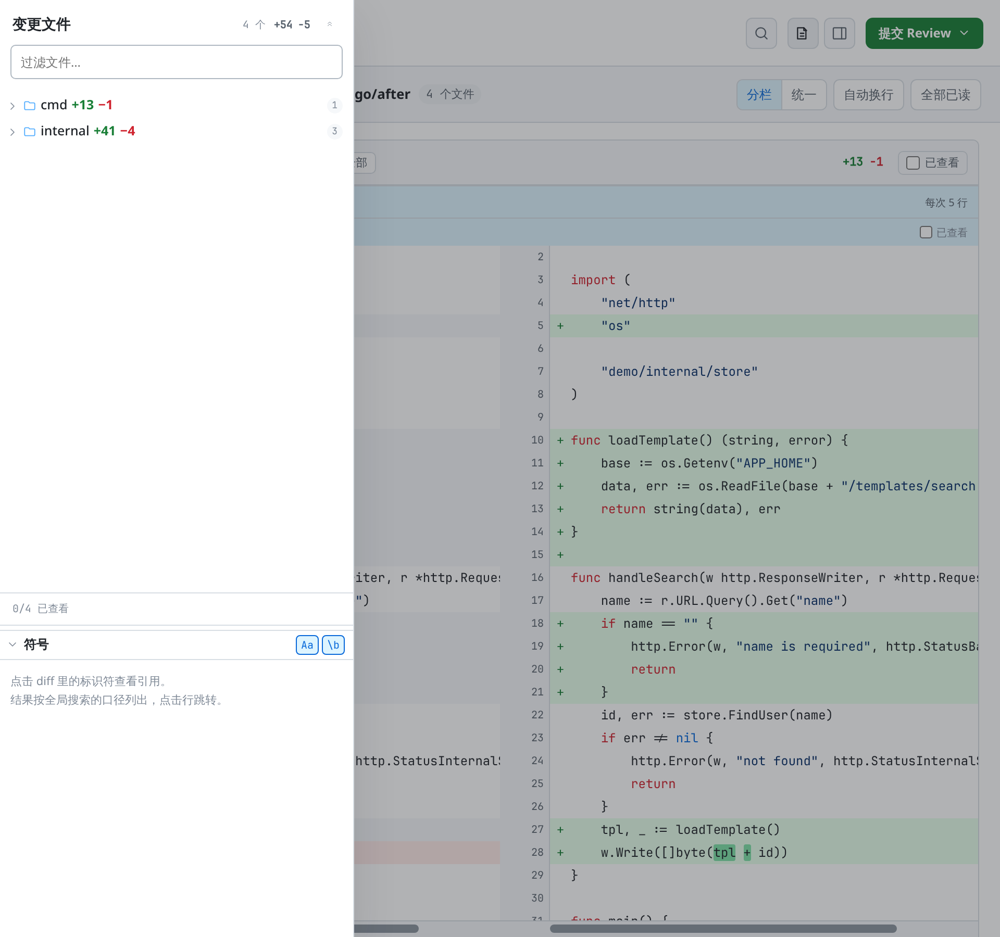

File tree
Fold by directory. File-type icons, comment counts, added and removed lines.
Open a local repository and read the diff file by file. Write line comments, then copy the review to your coding agent as Markdown.

Everything below runs on local files. No push, no pull request, no waiting for CI.
Fold by directory. File-type icons, comment counts, added and removed lines.
All changes, the uncommitted worktree, or a single commit.
Mark each hunk viewed. Editing the file drops its old marks.
Line comments, range selections, and one overall comment.
Search every diff file. Hits split into added, removed and context.
Click an identifier to list every reference in the repository, then jump to it.
Every comment carries the path, the side, the line number and the quoted code. Ctrl+Enter copies the whole review as Markdown.
## Review
### 1. internal/store/store.go · R15
> query = fmt.Sprintf("SELECT id FROM users WHERE name LIKE '%%%s%%'", name)
User input is concatenated into SQL. Use a parameterised query: WHERE name LIKE ?, and pass the wildcard as a parameter.
### 2. Overall
This change replaces parameterised queries with string concatenation. I would revert it.Markdown and JSON are also saved to a file from the same menu.
Six platform archives for v0.1.0. Each one holds a single executable with the frontend embedded.
tar -xzf intentflow_0.1.0_linux_amd64.tar.gz
sudo install -m755 intentflow /usr/local/bin/intentflow
intentflow versionExpand-Archive intentflow_0.1.0_windows_amd64.zip -DestinationPath .
.\intentflow.exe version| Platform | Archive |
|---|---|
| Linux x86-64 | intentflow_0.1.0_linux_amd64.tar.gz |
| Linux ARM64 | intentflow_0.1.0_linux_arm64.tar.gz |
| macOS Intel | intentflow_0.1.0_darwin_amd64.tar.gz |
| macOS Apple Silicon | intentflow_0.1.0_darwin_arm64.tar.gz |
| Windows x86-64 | intentflow_0.1.0_windows_amd64.zip |
| Windows ARM64 | intentflow_0.1.0_windows_arm64.zip |
Reviews are written by the browser, not by the server.
The three-layer semantic diff and the behaviour graph are the target structure, not shipped features.
| Stage | Content | State |
|---|---|---|
| 1 | Text diff and a local review store | Available |
| 2 | SSA fact layer: project, logic and intent diff | Not started |
| 3 | Behaviour graph: trigger, decision, transform, effect | Not started |
| 4 | LLM narrative layer that only reads facts | Not started |


